This article retains its original experiments and examples. For current package usage, see the usage guide.
Perplexity is the only free parameter in t-SNE that may need some tweaking. The best way to think of it is as controlling the size of the neighborhood around each point that the embedding attempts to preserve. The t-SNE paper notes that SNE “is fairly robust to changes in the perplexity, and typical values are between 5 and 50”. How to Use t-SNE Effectively goes into a bit more detail about the effect of perplexity. Too low a value will lead to small disconnected clusters, while too large values lead to circular plots with points approximately equally spaced.
There isn’t much literate on how to choose a perplexity value. Cao and Wang suggest an empirical method, which due to its resemblance to the expression for the Bayesian Information Criterion in model selection, they call the pseudo-BIC (pBIC). This adds an extra term penalizing larger perplexities to the final error:
\mathrm{pBIC} = 2\operatorname{KL}(P\mathbin{\|}Q) + \frac{\mathrm{Perp}}{N} \log N Here \operatorname{KL}(P\mathbin{\|}Q) is the final error (Kullback-Leibler divergence) from the embedding, \mathrm{Perp} is the perplexity, and N is the number of observations in the dataset you’re embedding.
Otherwise, the general advice is to try different perplexities over the usual 5-50 range and see if there’s one embedding that looks more visually pleasing than the others. We’ll look at the following values: 5, 25, 50 and 100, which cover the usual range, with 100 representing a value that is larger than what is usually recommended.
Datasets
See the Datasets page.
Evaluation
Apart from visualizing the results, we’ll also put the pBIC value for
each embedding in the title. The result with the lowest pBIC should be
the “best” result. The oli and coil20 datasets
are also used in the pBIC paper, although the method outlined there used
a larger number of perplexities.
Settings
For settings, we’ll use the ones given in the original t-SNE paper, except with scaled PCA initialization rather than random initialization and obviously we’ll be trying different perplexities. Also in my experience, lower perplexities require more iterations, so I am going to allow for ten times the number of iterations than usual to avoid any issues with the visualizations not having settled down after the usual 1000, although if large changes do occur, that is an obvious downside to choosing a low perplexity!
Example command for embedding iris with perplexity =
5:
# iris perplexity 5
# set ret_extra to TRUE so we can get back the final error for use in the pBIC.
iris_p5 <- smallvis(
iris,
scale = "absmax",
perplexity = 5,
Y_init = "spca",
eta = 100,
exaggeration_factor = 4,
stop_lying_iter = 50,
ret_extra = TRUE,
max_iter = 10000,
epoch = 100
)Results
Below are the final embeddings for each dataset, with the perplexities marked on the title.
iris
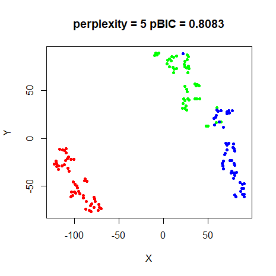 |
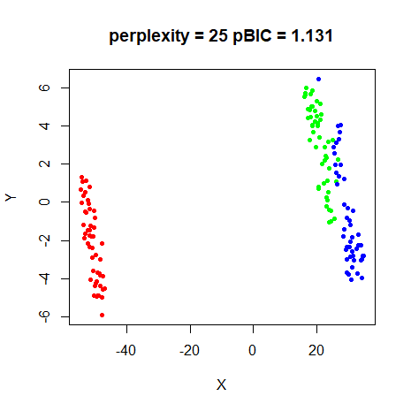 |
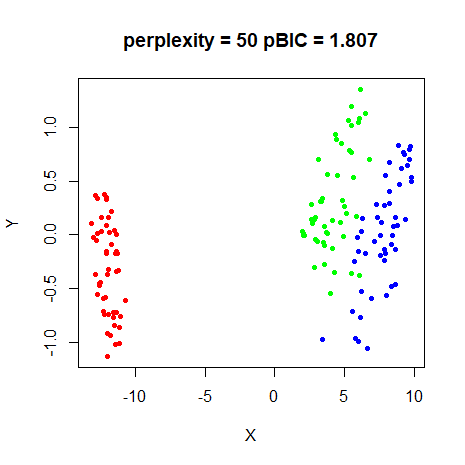 |
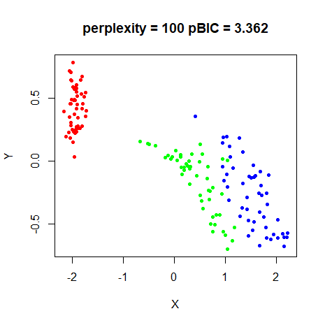 |
As will become a pattern, pBIC suggests the
perplexity = 5 is the best model.
s1k
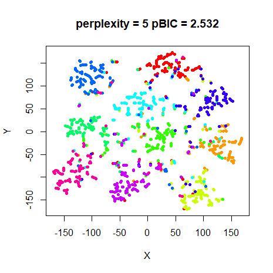 |
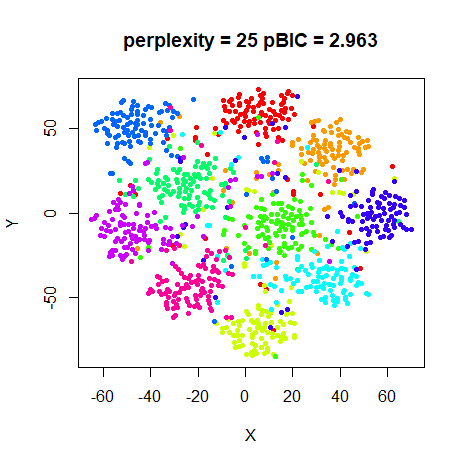 |
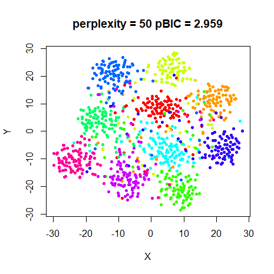 |
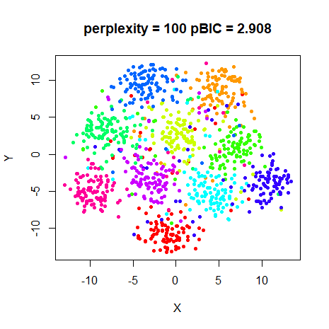 |
Again pBIC suggests the perplexity = 5 results as the
best.
oli
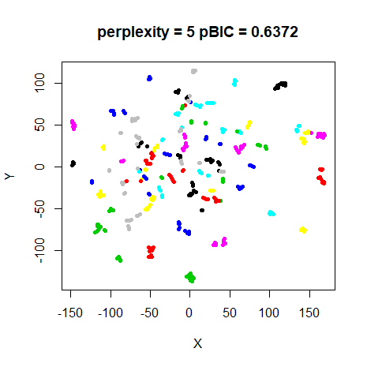 |
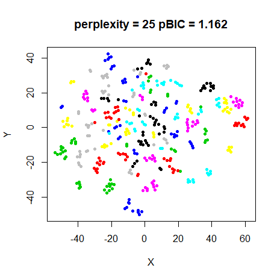 |
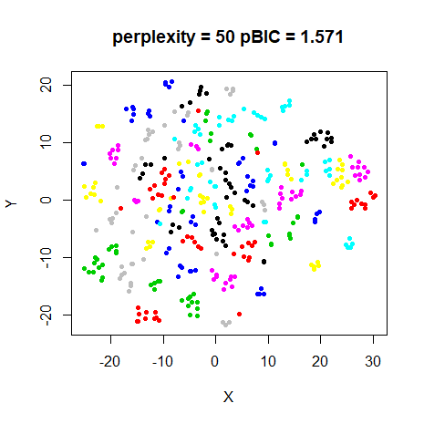 |
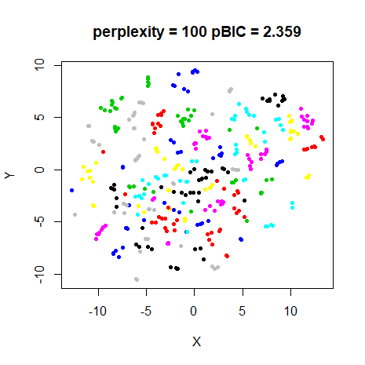 |
Yet again, pBIC says that the perplexity = 5 result
should be favoured. For this dataset, it does create tighter clusters,
so it’s not a terrible choice.
The pBIC paper suggests a perplexity of 12 for this dataset. I tried
this, but the pBIC was higher than for the perplexity = 5
result. Perhaps I don’t know how to calculate pBIC correctly?
coil20
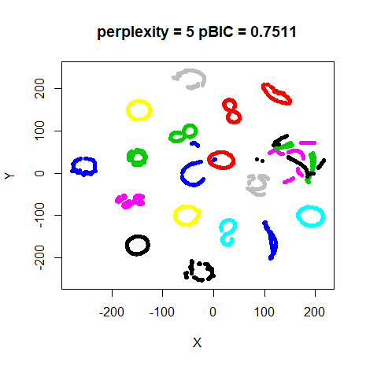 |
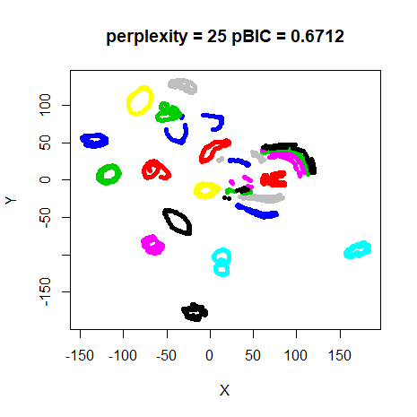 |
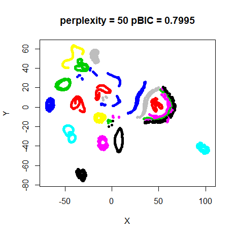 |
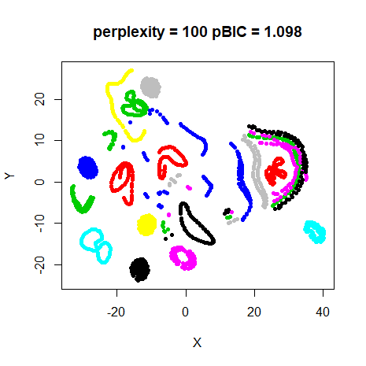 |
At last some variety. pBIC indicates that
perplexity = 25 is the correct choice. This is a bit
ironic, as for once I think that the perplexity = 5 results
might be slightly better in terms of displaying the loops. The pBIC
paper says that perplexity = 64 was best for this dataset.
But like oli, when I tried that perplexity with the
settings used here, it wasn’t an optimal value according to pBIC.
Convergence
Results presented so far used 10,000 iterations, which is ten times
larger than the t-SNE defaults. For smaller datasets
(e.g. iris, s1k, oli), this is
more than enough to attain convergence when using a large perplexity.
However, particularly at perplexity = 5, the KL divergence
drops noticeably between 1000 and 10,000 iterations. This is
particularly obvious with coil20, where the error is
reduced by a further 26%, mnist (19%) and
fashion (18%). The effect is much less pronounced at
perplexity = 25, where the largest change in error going
from 1000 to 10,000 iterations is for coil20, where the
error only reduces by 8%.
While there is a definite quantitative effect on the final KL
divergence by going to 10,000 iterations at a low perplexity, what sort
of visual effect does it have? Below are the results for
perplexity = 5 with the left hand image being the embedding
after the default max_iter = 1000, and the right hand image
that of max_iter = 10000 (and which are repeated from the
results above).
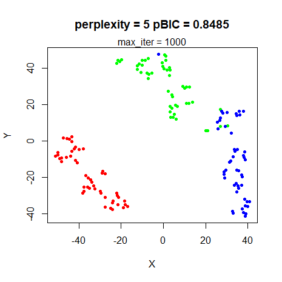 |
|
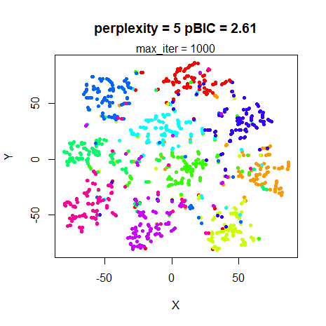 |
|
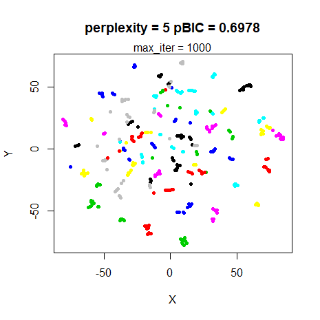 |
|
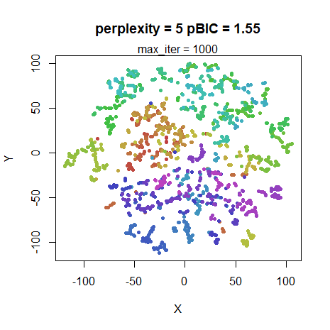 |
|
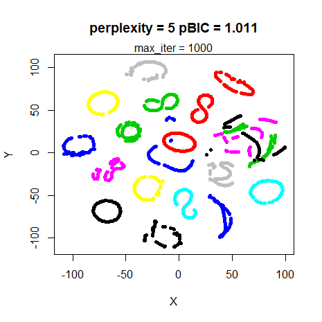 |
|
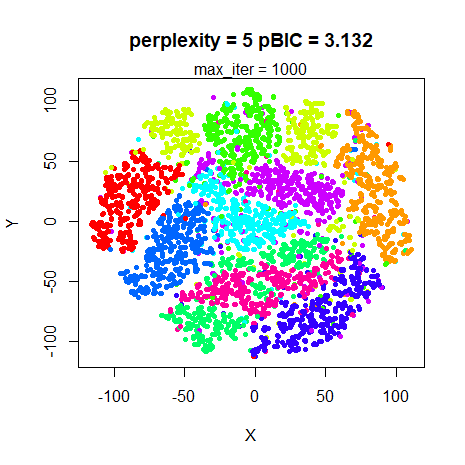 |
|
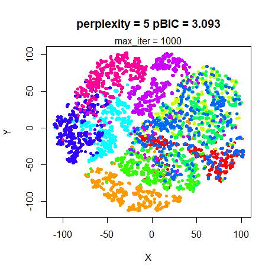 |
For the datasets where the final KL divergence was most affected by
optimizing for longer (coil20, mnist,
fashion), the results at 1000 iterations are clearly still
a work in progress. The overall shape is definitely there (even the
various loops for coil20), but the clusters haven’t yet
compressed and separated, so the visualization is less clear.
Note also that the pBIC values are noticeably inflated at 1000 iterations. As this is an effect that only occurs at low perplexity, it’s possible that this could cause the pBIC results to be biased, but probably not in a way that makes much difference.
Conclusions
The results shown here demonstrate that, as the t-SNE paper suggests,
the perplexity doesn’t enormously affect the results between values of
5-50, although I would suggest that a value between 20-50 is a better
range for initial experimentation. Of the four values tried here, the
perplexity = 25 results seem the most visually useful
across all datasets. coil20 seems to retain more of the
loop structure with perplexity = 5, but is a bit of an
outlier compared to other datasets used here.
At larger perplexities, clustering starts to be affected for smaller
datasets (e.g. s1k, iris), although even
perplexity = 100 works fine for mnist and
fashion and has the advantage of converging more
quickly.
perplexity = 5 results, while consistent with the other
results, does give a less smooth visualization, and takes a lot longer
to get there. Unless you have a reason to believe that such a low value
is necessary, there doesn’t seem to be a lot to be gained from it. I
would recommend doubling the number of iterations to
max_iter = 2000 in this case too. Going all the way to
10,000 iterations is overkill for all the datasets tried here. The KL
error doesn’t need to be particularly tightly converged in order to get
a usable visualization. Using a good starting point for initialization
(e.g. the PCA-based initialization I used here) also really helps for
low perplexity, particularly compared to the usual random initialization
which is the default for t-SNE.
Using only the 4 perplexities I tried in these experiments, pBIC
didn’t seem that helpful. For all but two datasets, it chooses the
perplexity = 5 result, which seem less visually pleasing
than the perplexity = 25 results to my eyes. Probably using
more perplexities between 5 and 40 would
provide better granularity. I was unable to confirm the results from the
pBIC paper. Perhaps the difference was down to the difference in
initialization. Or I am unable to calculate the pBIC correctly.
Finally, bear in mind that perplexity is only valid between 1 and N - 1,
where N is the number of observations
in the dataset. Setting perplexity = 50 for the
iris dataset implies something very different than doing it
for mnist (even the 6,000 subset I use here). It’s better
to think of perplexity in terms of the fraction of the size of the
dataset. Results are definitely and try and take into account the
clustering that might be inherent in the dataset and the degree of
overlap. Of course, that’s often unknown, data is normally full of
differently sized clusters and the point of running t-SNE is to get a
grasp on the structure of the data in the first place, so that’s not
very helpful advice. How to Use t-SNE
Effectively notes that the problem of choosing a single global
perplexity “is something that might be an interesting area for future
research”, but there’s not been much progress in the department. For one
potential solution, take a look at multiscale
JSE, although I am unlikely to implement it in smallvis
any time soon. For now, I suggest starting with a perplexity around 30
and taking things from there.